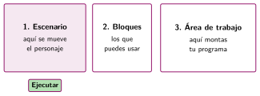
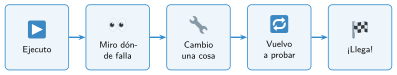

Primeros pasos con bloques: Code.org
🤔 Pienso5 min
Qué hago aquí: Piensa un momento y contesta con lo que ya sabes. No pasa nada si no lo sabes: es para empezar.
Entra en studio.code.org con el código de la clase. Escribe el nombre del primer reto.
📖 Leo y aprendo10 min
Qué hago aquí: Lee despacio, mira los dibujos y los ejemplos, y quédate con la idea clave del final.
En los retos de Code.org llevas a un personaje hasta una meta. La pantalla tiene tres zonas:

Los bloques se ejecutan de arriba abajo, uno detrás de otro. Eso es una secuencia.
Si el personaje choca, hay un error. Buscar y corregir errores es depurar: pruebas, ves dónde falla, cambias una cosa y vuelves a probar.

✏️ Hago30 min
Qué hago aquí: Haz las actividades en orden. Empieza siempre por las básicas.
Haz los retos que te diga tu profesor. Después contesta.
¿Cuántos retos has completado? ¿Cuál te ha costado más?
Escribe con palabras los bloques de un reto que hayas resuelto.
¿Para qué sirve el botón Paso a paso?
Un compañero ha puesto avanzar, avanzar, avanzar, girar a la derecha. El personaje choca en el tercer paso. ¿Dónde está el error? ¿Cómo lo arreglas?
🚀 Amplío (si quieres saber más)
Qué hago aquí: ¿Has terminado? Lee la curiosidad o elige el reto. Es voluntario.
Busca un reto que hayas resuelto con muchos bloques e intenta hacerlo con menos. ¿Qué has cambiado?
✅ Compruebo5 min
Qué hago aquí: Contesta sin mirar la ficha y marca cómo lo llevas.